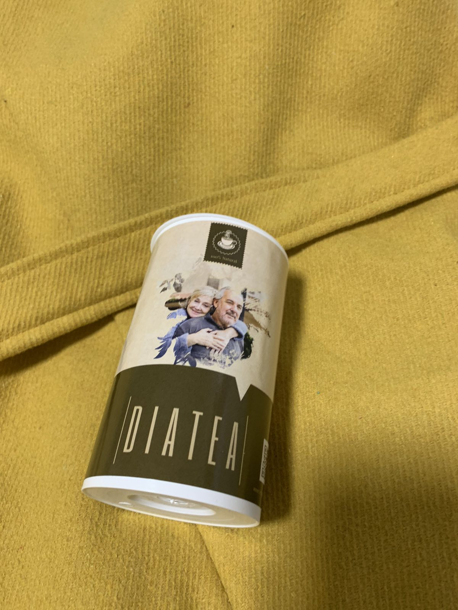
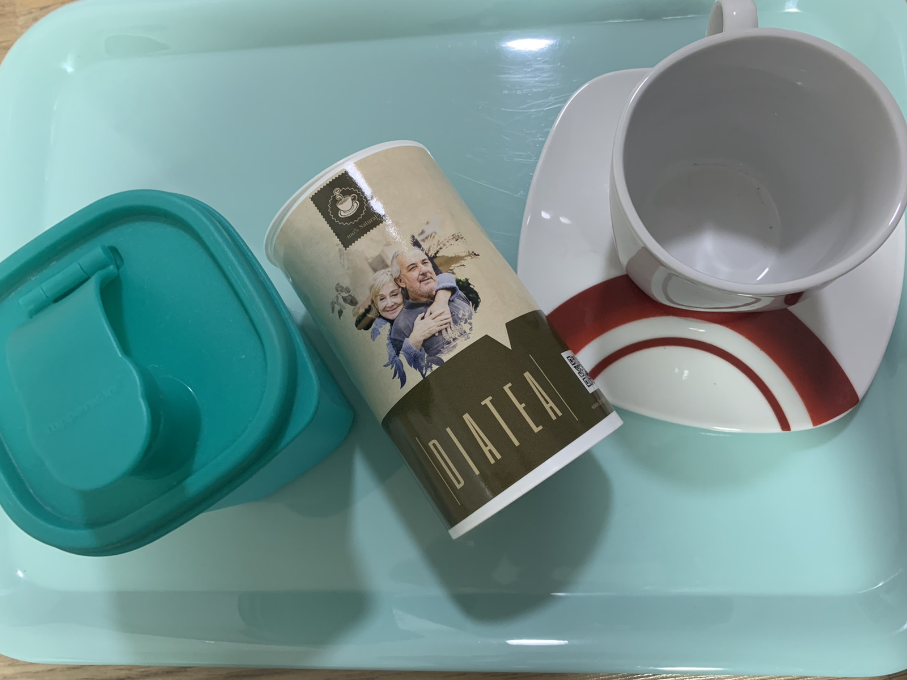
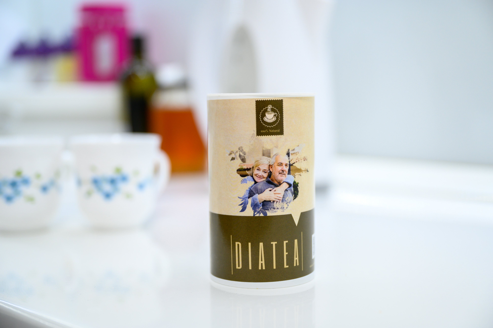
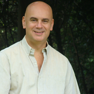

Больше 78% жителей Боснии страдает диабетом: каждый 2 из них становится инвалидом из-за ампутации конечностей
Сенсационная новость:
известнейший немецкий профессор
представил натуральный препарат на основе семейного рецепта, который стабилизирует сахар и устраняет все последствия диабета
Чай из растительных компонентов для нормализации уровня глюкозы в домашних условиях доступен каждому в Боснии
Главное событие этой недели - сенсационная новость об эффективном препарате от диабета.
На наши вопросы об инновационном средстве, способном стабилизировать сахар и восстановить организм от последствий гиперкалиемии, отвечает гость - Prof. Peter Nawroth, опытный эксперт в лечении диабета, эндокринных желез, липидов, нарушений обмена веществ и фертильности.
Prof. Peter Nawroth
профессор, доктор медицинских наук, практикующий врач-эндокринолог, автор больше 200 научных работ, 40 лет стажа
Prof. Peter Nawroth впервые откровенно поделился, почему он в принципе выбрал стезю эндокринолога, как диабет угрожал его близким людям, и раскрыл метод, который способен поставить на ноги больного с высоким сахаром в любом возрасте и на любой стадии болезни.
Корреспондент
Во время подготовки к нашей встрече я ознакомился со статистикой диабета в Боснии. Она ужасает! Ведь в течение всего 2022 года количество людей с высоким сахаром увеличилось в три раза. Почему это происходит?
Prof. Peter Nawroth
Это общемировая тенденция: по данным ВОЗ , в мире насчитывается около 2.3 млрд человек, у которых есть диабет в разных стадиях. И международная организация предупреждает, что ситуация будет только хуже из-за ряда факторов: малоподвижный образ жизни, несбалансированное питание, вредные привычки, стрессы и т.д.
Однако Всемирная организация здравоохранения отмечает, что в развитых дела лучше. В Боснии же и других странах с не столь высоким уровнем экономики распространение диабета в четыре раза выше.
Опасность заключается в том, что 46% взрослых с диабетом не подозревают о наличии у себя заболевания. То есть больной даже не догадывается, что может в любой момент умереть от диабетической комы, остановки сердца или отказа почек, спровоцированных скачками сахара.
Но трагедия заключается в том, что в 73% случаев таких страшных последствий можно было бы избежать, предоставив доступ к современным эффективным методам терапии.

Осложнения диабета из-за бракованной партии инсулина
Конечности перед ампутацией из-за нестабильного уровня глюкозы в крови
Диабетическая стопа. Возникает на 2 степени диабета
Слепота которая появилась как осложнение 1 стадии
Корреспондент
Однако эндокринологи, у нас, в Боснии, ставя диагноз "Диабет", как правильно, уверяют пациентов, что диабет неизлечим. Вы же утверждаете обратное!
Prof. Peter Nawroth
Мягко говоря, это неправда.
К сожалению, это не что иное, как недобросовестность врачей, в лучшем случае. Когда эндокринологи предлагают препараты, которые только на время снижают, они по факту играют на стороне недруга. Ведь аптечные средства дополнительно вредят здоровью диабетика, по сколько бьют по всем внутренним органам! Это только сплошная химия!
Но это не значит, что можно не лечится, игнорировать проблему! Без правильной терапии диабет приводит к остановке сердца, провоцирует отказ почек. Согласно статистике, при диабете средняя продолжительность жизни составляет 5-7 лет.
Корреспондент
Что же делать диабетикам в Боснии, которые остаются один на один со своей бедой?
Prof. Peter Nawroth
Понимаете, проблема заключается, на самом деле, в бездействии и безразличии врачей в Боснии. Более того, у меня есть все основания говорить о преступном сговоре эндокринологов с фармакологами. Ведь если людей никто не лечит при наличии действенных препаратов ю, ищите кому это выгодно!
И это в то время, когда можно избавиться от диабета без химии раз и навсегда! Я знаю это не только как врач, но и как человек, в семейном истории которого немало страниц посвящены этому коварному недугу.
Корреспондент
Что вы имеете в виду?
Prof. Peter Nawroth
Дело в том, что сахарным диабетом долгие годы болели мои родные дедушка с бабушкой. Хотя я был ребенком, я прекрасно помню, как все начиналось.
А начиналось всё сравнительно невинно: сухость во рту, сильная жажда с участившемся мочеиспусканием. Но чем дальше, тем хуже ! Мои близкие теряли силы, жаловались что кожа стала ка пергамент, от малейшего повреждения возникали раны, которые долго заживали. Одновременно стало падать зрение и ухудшаться слух.
Однако бабушка с дедушкой были категорически против аптечной химии. Они отказались колоть инсулин и пить лекарства. Вместе этого мои родные экспериментировали с народными рецептами, изучая их досконально и испытывая на себе разные составы.
И у них кое-что получилось! Мои дедушка с бабушкой прожили до глубокой старости, уйдя в мир иной с ясным разумом и в достаточно крепком здравии. А мне достались их наработки, которые лежали и ждали своего времени. Теперь благодаря им каждый в Боснии может избавиться от диабета и его последствий.
Корреспондент
Каким образом?
Prof. Peter Nawroth
Речь идёт о первом в своём роде препарате, способном действительно восстановить эндокринную и сосудистую систему, полностью вывести из организма излишки сахара и стабилизировать его, исключив рецидивы. А дальше человеческое тело включает организм саморегенерации!
Это препарат был создан на основе наработок моих родных, которые я сохранил и с которыми долго работал в лаборатории. И только недавно, благодаря изобретению новейших способов экстракции полезных веществ из растений, на основе старинной формулы было создано средство для полной стабилизации сахара и устранения диабета. Дело в том, что активные вещества в этом составе представлены в максимально возможной концентрации, поэтому удается не только остановить, но и даже обратить вспять патологические процессы, которые обычно происходят при диабете в поджелудочной железе.
Корреспондент
Удивительная история!
Расскажите, пожалуйста, подробнее о препарате.
Prof. Peter Nawroth
Это Diatea - уникальный комплекс в форме чая, который, кстати, уже активно используется эндокринологами в США, в ЕС и других развитых странах. В его основе специальная формула способна запустить процессы регенерации даже в тяжёлых случаях.
Diatea прошёл клинические испытания и показал чрезвычайно высокие показатели эффективности:
В 96% случаев сахар вернулся к оптимальным показателям в течение курса приема препарата.
У 91.3% добровольцев прошли симптомы диабета, наладился сон, нормализовался аппетит.
У 98.7%респондентов повторный контроль подтвердил полную стабилизацию уровня сахара, улучшение функциональности поджелудочной железы, восстановление слуха и зрения, нормализацию работы ЖКТ, мочеполовой системы.
К сожалению, стараясь продвигать препарат от диабета, который действительно работает, я лично удостоверился, что фармацевтическая мафия в сговоре с эндокринологами создаёт всевозможные препятствия, чтобы простые люди о нем не узнавали. Ведь Diatea способен лишить их миллионных доходов!
Корреспондент
То есть, по факту сегодня простые жители Боснии не могут приобрести ?
Prof. Peter Nawroth
Не совсем так.
Пока не удается прийти к согласию с аптеками и побороть сопротивление эндокринологов, мы нашли способ реализовать уникальный комплекс через интернет. Для этого создан официальный сайт, где напрямую без посредников можно сделать заказ. Причем сейчас мы предлагаем беспрецедентную акцию со скидками для жителей Боснии, инициированную в связи с катастрофическим ростом числа диабетиков в этой стране.
Однако, хочу сразу добавить, что количество акционного препарата ограничено. Поэтому рекомендую заказать прямо сейчас.
От редакции:
После распространения информации о действенном препарате для стабилизации сахара, в сети активизировались мошенники. Поэтому мы размещаем форму для регистрации в акции непосредственно на этой странице, согласовав это с изготовителем. Для получения препарата со скидками делайте заказ через официальную форму!
Old price: 50 EUR
New price: 25 EUR
Успей заказать "Diatea" со скидкой 50%
до г. включительно
Komentari:
Amina Kovačević ()
Ja sam jedna od onih koji su već isprobali ovaj lijek. Šećer se vratio u normalu. Žeđ je
nestala, suha usta takođe, prestala sam često trčati do toaleta, prestalo mi se vrtjeti u
glavi. Šećer se provjerava nakon kursa svaki dan - nije se povećavao. Prošlo je dva
mjeseca od tretmana. Osjećam se kao zdrava osoba. Preporučujem svima.

Berina Avdić ()
Već sam čitala o Dia Tea u medicinskom časopisu. Impresivno.
Adnan Hodžić ()
Dobio sam paket jučer. Do kraja sam sumnjao da će biti sniženo. Mislio sam da je to neka vrsta prevare. Ali već sam dobio lijek, počeo sam ga piti danas.
 Lejla
Begić
Lejla
Begić
Ostavila sam zahtjev. Obećali su da ću za pet dana moći da ga dobijem na adresu. Zaista se nadam. Dijabetes me već iscrpio.
Sulejman Ramić
Dijabetes je veoma podmukla bolest. Ja sam već četiri godine bolestan, nije bilo vanjskih znakova, samo ponekad suha usta. Zato nisam baš vjerovao u odsječene noge i tako dalje. Ali nedavnosam se onesvijestio. Odvezli su me u bolnicu, gdje sam uradio testove. Sve je ispalo veoma loše. Bubrezi su u prekanceroznom stanju, krvni sudovi su toliko istrošeni da su doktori šokirani. Ovako se ne liječi bolest. Čuo sam puno dobrih stvari o Dia Tea, ali nisam znao gdje da ga naručim. Sada znam. Čekam isporuku, nadam se da će pomoći. Hvala Vam!
Almir Alić
Ovo je zaista nešto! Naručite i uvjerite se sami!

Mirela Brkić
Kako i gdje naručiti ovaj Dia Tea?
Ahmed Imamović
Mirela, gore u članku je službeni obrazac za Dia Tea preko kojeg trebate poslati prijavu. Samo požurite dok program radi, možete ga dobiti sniženo. Lijek mi je puno pomogao s testovima u punoj normi!
Mirela Brkić
Ahmede, hvala puno, već sam naručila, ali možete li mi reći koliko je potrebno za isporuku?
Ahmed Imamović
Stiglo mi je za tri dana.
Vildana Tadić
Upravo sam shvatila pravi cilj doktora. Sve što traže od nas je novac! Ne daju lijekove koji bi trebali biti sniženi, ali ima dosta stvari na policama apoteka. Kupujte i budite sretni. Potpuna ravnodušnost. Čak i za ljude postaje strašno, kao psi jedni s drugima. Niko ne brine o dijabetičarima.
 Muamer Dedić
Muamer Dedić
Bio sam liječen Dia Tea čajem prije godinu dana. Izdaje se direktno s memoranduma
proizvođača. Već 1,5 godinu živim kao zdrava osoba. Od svega što sam probao (dijabetičar
sa iskustvom), Dia Tea je najbolji do sada. Uzmite bez oklijevanja, ovo je vaše
izbavljenje od bolesti! I ne žalim ni što nisam naručio dok je bio na sniženju, već za novac, nije bilo
beneficija, ali lijek je očito vrijedan toga!

Sara Mehić
Prijatelj je pričao o njemu. Živi u Španiji. I tamo se liječe.
Kenan Bošnjak
Vidim ne samo da imam takve probleme, nego hvala Bogu da sam pronašao Dia Tea prije otprilike mjesec dana. Kao rezultat toga, riješio sam se dijabetesa, tako brzo koliko desetine sredstava nisu mogli pomoći! Doktori sliježu ramenima!
Faris Selimović
Recite ljudima ako pomaže. Mnogi će sada uštediti novac!
Merjem Omerović
Hvala, Dia Tea je pomogao vrlo brzo! Naručila sam ga preko obrasca proizvođača! Nemojte odlagati liječenje, bolje je da se riješite dijabetesa sada nego da kasnije legnete u krevet i shvatite da se više nikada nećete moći kretati ili, još gore, da ćete umrijeti.
Esma Topić
Hvala vam.. Da nije bilo vas, onda ne bih vjerovala u efikasnost! Živjela sam sa svojim mužem koji boluje od dijabetesa više od pet godina. Strašno je patio. A sada opet trčkara okolo kao da ima 18 godina.
Peter Nawroth
Esma, možete li mi reći, molim vas, koliko je dugo trajalo liječenje?
S poštovanjem, profesor Peter Nawroth
Esma Topić
Otprilike tri mjeseca, nakon 20 dana, generalno sam prestala da primjećujem da mi šećer raste.
Peter Nawroth
Esma, hvala Vam na odgovoru.
Nermina Hadžić ()
Hvala Vam! Vrlo zanimljivo. Naručila sam Dia Tea. Konsultant je na telefonu rekao da je ostalo jako malo toga. Zato, ko želi, naručite brzo dok još ima na zalihi!